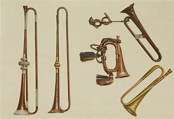
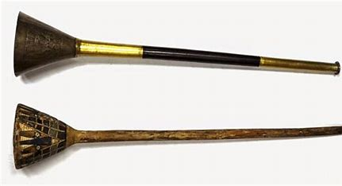

La trompeta , es un instrumento musical de viento-metal que suena por la vibración de los labios contra una boquilla de copa. Los etnólogos y etnomusicólogos usan la palabra trompeta para cualquier instrumento con vibración labial, ya sea de cuerno, caracol, caña o madera. La distinción técnica entre trompeta y el trombón es que un tercio de la longitud del tubo de una trompeta es cónica y dos tercios es cilíndrica, mientras que el tubo de la trompa es lo contrario. Ambos tipos se encuentran en todo el mundo.
Historia
Que es, Origen, Tipos, Partes, Características

Origen de la Trompeta
La trompeta metálica data del segundo milenio antes de Cristo en Egipto y en Roma, cuando era un pequeño instrumento ritual o militar que sonaba sólo con una o dos notas. Utilizado en diversas formas como instrumento de señalización militar y a veces civil (como el salpinx griego recto, la tuba romana similar y el lituus romano, recto con una campana volteada), adquirió importancia como instrumento musical en la Edad Media.
La Trompeta Egipcia
Esta, data de hace más de 3.000 años, ya que se encontraron formas de trompetas de bronce y plata en la tumba de Tutankamón en Egipto. Muy a menudo, estas trompetas tempranas se habrían utilizado como dispositivos de señalización, ya sea para fines religiosos o militares. Se podría decir que esta tradición temprana se ha mantenido hasta la fecha en el uso de una corneta en la que diferentes melodías comunicaban información diferente. Hacia la Baja Edad Media y el Renacimiento, las mejoras técnicas en la metalurgia y el diseño de instrumentos en general llevan a la trompeta a ser utilizada en un contexto más musical y, por supuesto, a la «era barroca» se la denomina a menudo la «Edad de Oro de la trompeta natural».

El Desarrollo de la Trompeta
Las trompetas más antiguas tenían tubos rectos de apenas 60 centímetros de largo, un instrumento recto que conserva la asociación tradicional de la trompeta con la realeza y la pompa, alcanzó una longitud de unos 2 metros. El aumento de la longitud permite un número proporcionalmente mayor de armónicos naturales, aunque el alcance también viene determinado por la naturaleza de los labios del músico. Aproximadamente en 1400 el tubo se había alargado hasta el punto de que la trompeta se dobló en forma de S para facilitar su manejo. Hacia el año 1500 había adquirido el bucle alargado que ahora se asocia con el instrumento. Hacia 1600 los trompetistas de corte y de gremio, acompañados de timbales, pudieron tocar melodías en el registro superior, o clarino, donde las notas naturales forman aproximadamente una escala mayor.